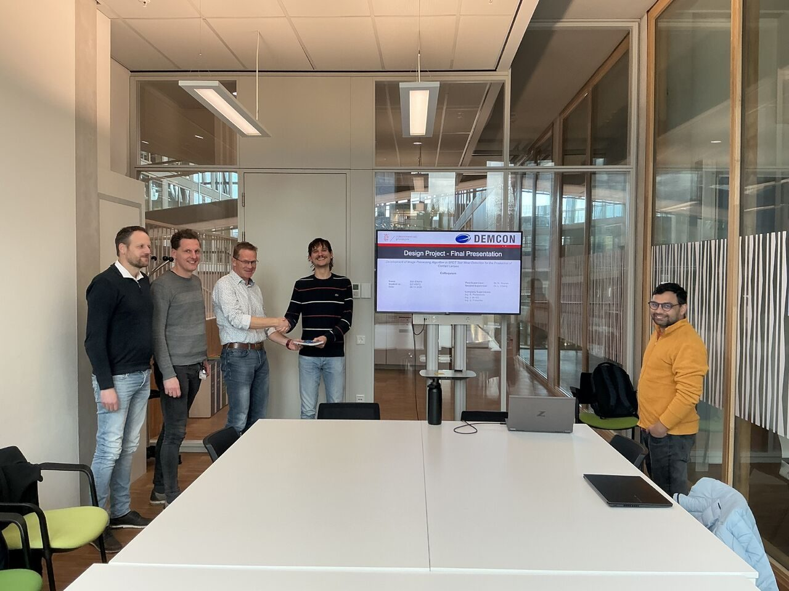

October 2025
Stijn Eikens completes design project on SPDT tool-wear detection
The group is delighted to celebrate Stijn Eikens's successful design project at Demcon, supervised by Remco Poelarends, Ger Folkersma, Johan de Wit, and Nabeel Younas, PMP® from Engineering and Technology Institute Groningen. His project is titled "Development of an Image-Processing Algorithm for SPDT Tool-Wear Detection in the Production of Contact Lenses".
The project delivered a CCD-camera inspection prototype validated on in-use lathing tools, demonstrating clear potential for earlier wear detection and more consistent surface quality.
Congratulations, Stijn. This is a strong foundation for scaling vision-based tool monitoring in ultra-precision manufacturing, and the group wishes him a bright future ahead.
The group also looks forward to strengthening collaboration between academia and DEMCON in future.
